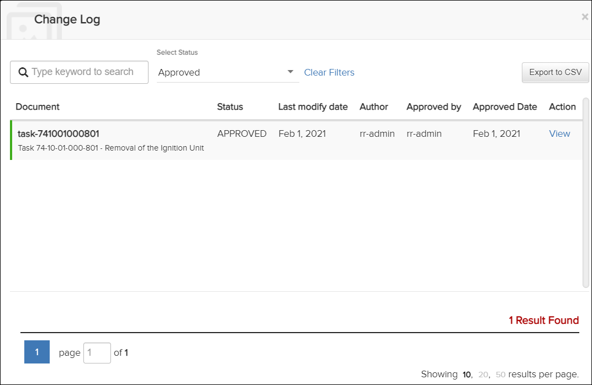
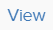
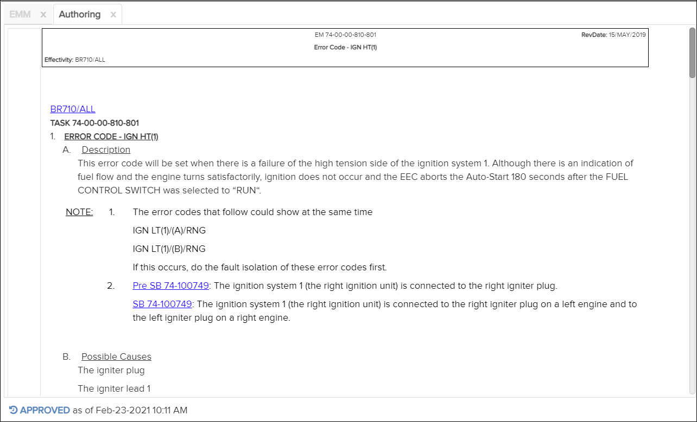
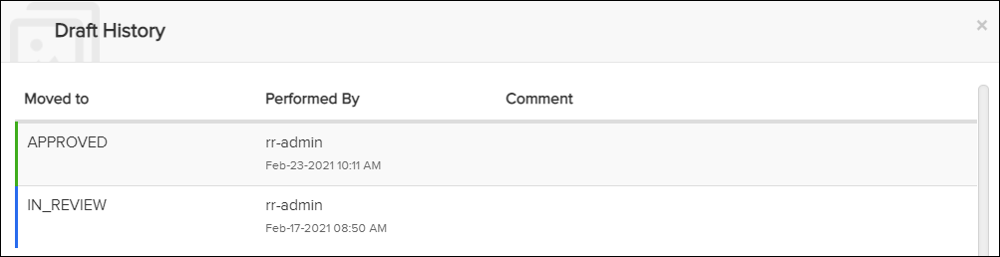

Not applicable for Pinpoint Standalone Light.
Users with appropriate permissions can use the Change Log and Draft History dialogs to audit authoring changes.
Change Log Dialog

action on the left side of the dialog to open the approved draft (see the screenshot above).
Authoring Tab - Approved Draft
The draft shows when it was approved on the bottom-left. Click on that text to open the Draft History log, which provides additional information on the draft's approval.

Draft History Log